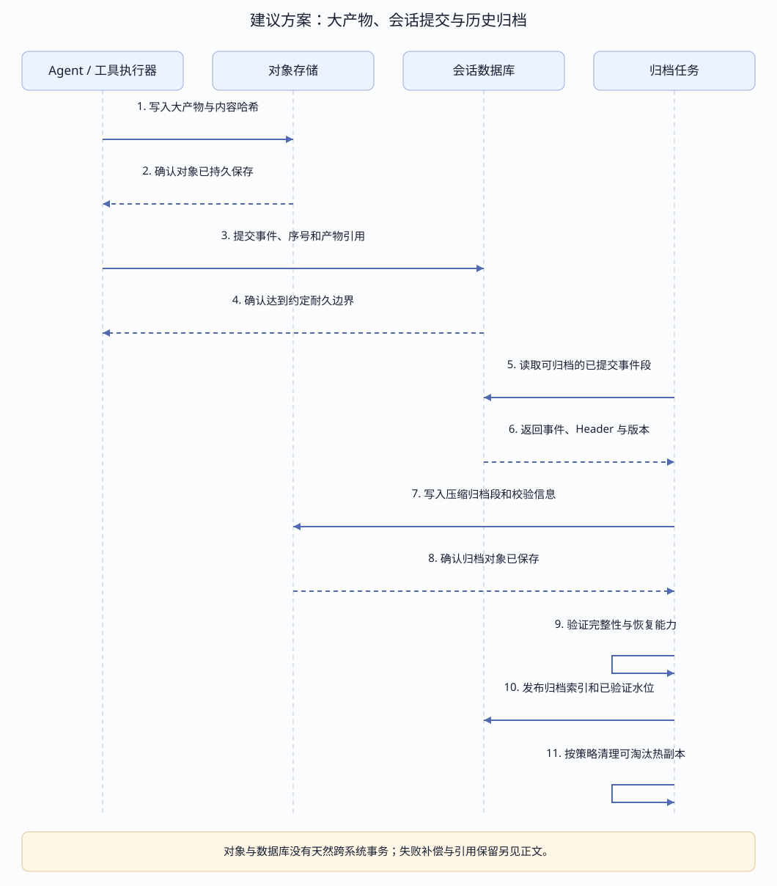
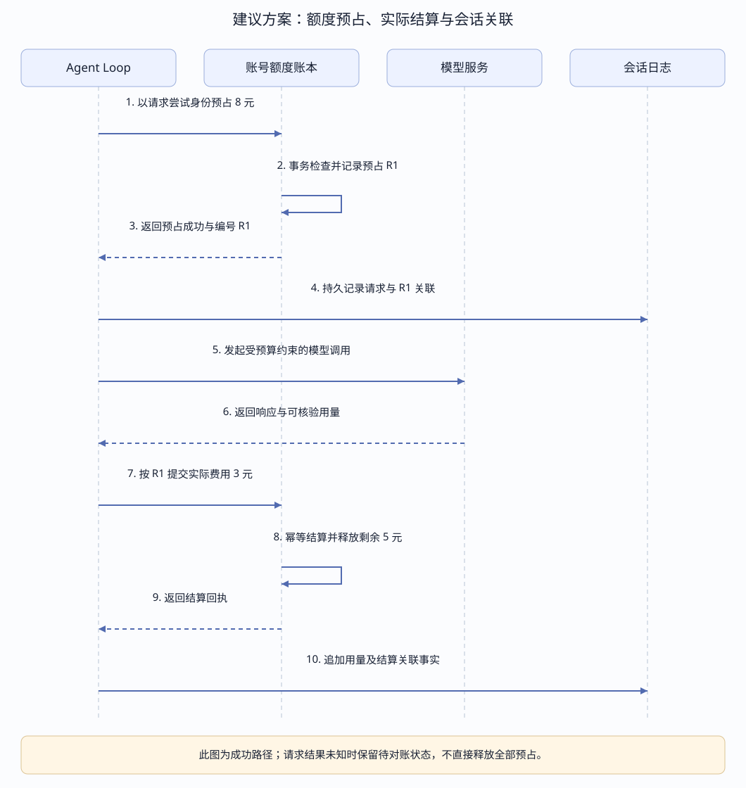
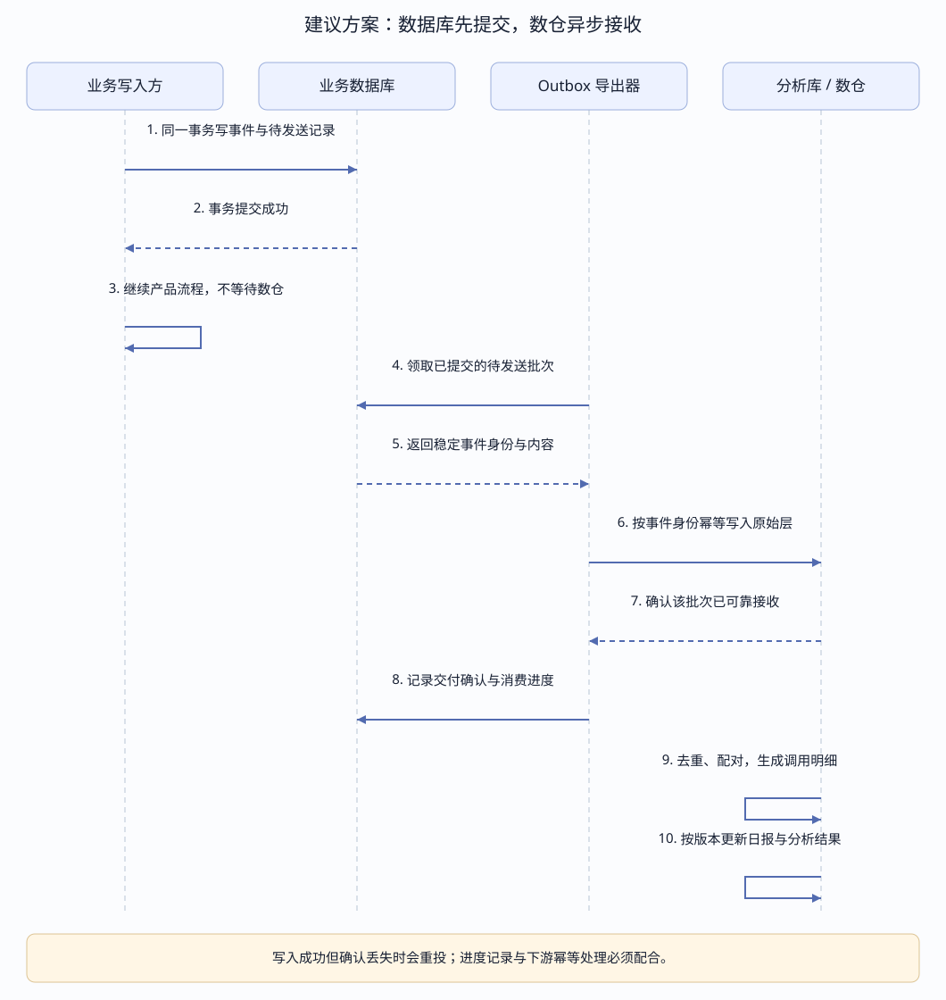

← 课程首页 · Loop 部署与评估 · 恢复与 OTel 详解
EVENT LOG · STORAGE / QUOTA / WAREHOUSE
Event Log 量大以后，
怎样存、怎样扣额度、怎样进入数仓？
会话存储保留可恢复的事实，账号额度账本负责实时放行与结算，数仓接收异步副本做跨会话分析。它们可以关联同一次模型请求，但有各自的提交边界和读取用途。
数据库通常先提交，数仓随后异步接收。产品运行不等待数仓；数仓故障后可以补传。放行额度读取实时账本，不能等待报表追平后再决定。
核对日期：2026-10-16。Harness 实现依据子模块 99f6f02fecdb7dff40c3fbc9470f5907c29f74ca。图中的对象归档、账号额度账本、Outbox 与入仓协议均是建议方案，尚未在本仓库实现；现有持久化与 best-effort 遥测边界单独列明。本文没有修改存储格式或运行计费、同步服务。
存储分层：围绕访问方式安排数据
| 层 | 保存内容 | 主要读取方式 | 示例选择与边界 |
|---|---|---|---|
| 会话权威存储 | Session Header、事件顺序、模型消息、调用与结果，以及重建需要的配置事实。 | 按会话和序号读取，恢复、打开历史、续接事件。 | 本地 JSONL / SQLite；服务端可实现数据库后端。保留原始事件与版本契约。 |
| 产品查询投影 | 会话列表、标题、状态、最近活动等。 | 分页列表、过滤和排序。 | 按需求更新的查询表；明确可以由哪些事实重建。 |
| 大产物与历史归档 | 附件、长工具输出、文件快照、压缩的原始事件段。 | 按引用取对象，按归档索引取历史片段。 | 本地文件或对象存储；引用、完整性、权限和保留期要协调。 |
| 分析库 / 数仓 | 原始分析副本、模型与工具调用明细、日报和评估结果。 | 跨会话、时间、模型和版本做筛选与聚合。 | 可使用分析数据库，或对象存储上的列式文件配查询引擎；不承担在线恢复与余额放行。 |
| 账号额度账本 | 充值、调整、预占、结算、释放和待对账状态。 | 按账号原子更新，按请求身份幂等处理。 | 耐久业务存储或独立账户事件流；与会话及数仓通过稳定身份关联。 |
大数据系统与数据库可以配合。先区分“读某个会话”和“扫描一个月的全部会话”，再决定是否增加分析层；没有按事件条数划定的通用门槛。写入峰值、数据字节、查询负载和保留周期更有判断价值。
容量例子：每天 1 万个会话，每个 1000 条事件，平均每条 1 KB，约为每天 1000 万条、10 GB，30 天约 300 GB 原始事件。这里按十进制估算，未算附件、索引、副本，也未计压缩。多个小分片的数量与长工具输出的体积应分别测量。
长期分析可使用 Parquet 等列式副本；恢复仍需保留支持原始协议的事件、Header、资源引用与类型版本。不能把有损加工后的分析表当作完整原始归档。对分片聚合或删除，也必须先验证来源引用和回放语义，不能直接删掉 canonical chunks。
归档时序：确认可恢复后，再淘汰热副本


具体例子：一次测试产生 20 MB 输出。建议方案把完整输出存为对象，事件记录对象引用、长度、内容哈希及实际展示给模型的文本。超长原文留作授权后的取证，截断版本仍明确记录截断策略。该引用形式属于新后端设计，不表示当前日志可以直接替换字段。
会话关闭后，归档任务可以把已提交事件段压缩，连同 Header、序号范围、格式版本、哈希和依赖引用清单写入对象存储。验证对象可读、事件连续、引用完整和可恢复，再发布归档索引。热数据库必须有读取归档并接上热尾部的能力，之后才能按策略清理热副本；现有 Harness 后端没有因本页而自动获得这条链路。
对象上传成功但事件事务失败时会产生孤立对象，可按宽限期和引用核对回收；上传失败时不能提交声称完整内容可用的引用。归档上传失败不应推进归档水位。不能仅因会话很旧就删除被 fork、评估快照或其他产物引用的对象。
保留期、数据删除和访问权限需要同时覆盖热库、归档、分析副本及备份策略。分析副本的分区和生命周期可以单独管理；清理分析数据不应偷偷破坏会话恢复。ClickHouse 提供分区和 TTL 等数据管理手段，但如何保留权威证据仍由产品定义。官方数据管理说明
额度处理：会话用量与账号余额各自归谁？
| 事实或决策 | 会话日志保存什么 | 权威处理位置 |
|---|---|---|
| 模型 Token 用量 | 提供方报告的输入、输出和缓存用量，以及来源调用。 | 用量事实与去重规则；缺失用量不能擅自当零。 |
| 展示费用 | 可关联用量与价格依据；结果可以是独立投影。 | 版本化价目表与计算规则；正式账单另需完整计费事实和对账。 |
| 会话预算 | 预算设置、变更、触顶停止与关联请求。 | 运行时预算策略；不是把上下文占用百分比当成余额。 |
| 共享账号额度 | 与本会话有关的预占编号、结算回执或拒绝原因。 | 账号级账本原子检查、预占和结算；可采用事件溯源，但不局限于一条 Session。 |
| 频率限制与提供方额度耗尽 | 限流、等待、重试或终止的事实。 | 实时限流器与模型提供方；RATE_LIMIT 和 QUOTA 分开处理。 |
会话日志可以记录额度决策的依据和结果，但不能靠扫描各自会话再决定共享余额。数仓存在同步延迟，适合账单分析、用量趋势和对账，调用前的放行必须读取实时权威状态。
预占账本、业务事件和结算之间仍有跨系统失败窗口。每个实际提供方请求尝试使用稳定身份，关联预占、提供方请求 ID 和结算记录；业务重试带来新请求时需要新尝试身份，消息重投则沿用原身份去重。会话日志漏写关联时可补记或对账，不能因此再次扣费。
预占与结算时序：两个会话不能同时花掉同一份余额


| 时间点 | 已扣费后的账面余额 | 预占 | 可用额度 | 动作 |
|---|---|---|---|---|
| 初始 | 10 元 | 0 元 | 10 元 | A、B 两个会话都准备调用。 |
| A 原子预占 8 元 | 10 元 | 8 元 | 2 元 | 获得预占编号 R1；预占尚未成为实际扣费。 |
| B 请求预占 8 元 | 10 元 | 8 元 | 2 元 | 不足，拒绝或等待；不能按数仓里的旧余额放行。 |
| A 实际花费 3 元 | 7 元 | 0 元 | 7 元 | 扣 3 元，释放 R1 中其余 5 元；重复结算回同一结果。 |
这个例子假设能为本次请求设置合理成本上界。严格硬额度需要覆盖输入、输出、价格、并发、重试及额外调用；只有启发式 Token 估算或 maxTokens 参数，不足以承诺绝不超额。模型失败、取消或流中断也可能已经产生计费，标题、摘要和其他辅助调用不能从账本统计中遗漏。
结果未知：预占成功后进程崩溃、请求超时或用量回传缺失时，先进入待对账状态。核实是否真正发出请求以及提供方计费，再结算或释放；不能只因本地没看到结果就自动退回全部额度。预占超时策略要结合请求状态和提供方能力设计。
当前实现边界：Harness Token Meter 从持久事件派生用量；harness-lab 的费用由用量乘版本化价目表计算，不回写事实日志；适配器区分 QUOTA 与 RATE_LIMIT。这些能力不等于本仓库已有账号账本、支付结算或跨会话硬预算系统。
什么时候进入数仓？围绕问题和负载判断
| 问题 | 适合的读取位置 |
|---|---|
| 打开会话 A，读取序号 500 之后的事件；恢复并继续。 | 会话权威存储及其受支持的归档读取层。 |
| 当前账号能不能再发一次请求？ | 实时额度账本；不能等待数仓追平。 |
| 最近 30 天哪个版本工具超时最多，各模型用量多少？ | 分析库 / 数仓中的明细与汇总。 |
| 找出多次重试仍失败的案例，重新评估。 | 数仓筛选候选，再读取固定版本的完整证据。 |
| 会话、套餐、账单和模型成本需要关联分析。 | 数仓关联多类事实，保留来源和各自更新水位。 |
当长时间聚合影响在线读写、多个消费者重复扫描、需要版本对比或跨系统关联时，再增加独立分析层。初期可以是定时批处理与一组分析表；分析数据库也能承担该角色，不必从第一天就部署完整大数据组件栈。
数据库与数仓同时写吗？先提交，再异步同步


- 业务侧提交：在支持事务的同一个数据库中，把事件与 Outbox 待发送记录一起提交。Outbox 表示“这条事实还要交付给谁”，不能把另一套独立存储也声称纳入了该事务。
- 产品继续：按产品约定返回或进入下一步，不等待数仓。现有 Harness 的内存 append 与延迟持久化不是天然的数据库提交确认，需要在后端中实现实际耐久边界。
- 后台投递：导出器领取已提交记录，可直接批量写分析库，也可经消息系统分发。租约与重试需要保留源事件身份，避免重复执行消费者副作用。
- 确认与进度：下游可靠接收后，记录交付确认；进度写入前崩溃会重投，由接收端幂等吸收。多个 sink 各自保存进度，不能共用一个“已发出”布尔值。
- 明细与汇总：处理器按确定规则生成调用明细、日报和评估候选，记录转换版本与处理水位。原始层接收成功不代表所有报表已可查询。
Outbox 可由轮询导出，也可由 CDC 捕获。CDC 是读取数据库已提交变化的机制；Outbox 是把待交付事实与业务写入放入同一事务的设计，两者可以组合。Debezium 的 Outbox Event Router 用事件 ID 支持下游去重，并以业务键关联消息顺序。官方说明
| 源存储 | 一种可行采集方式 | 不能忽略的边界 |
|---|---|---|
| JSONL | 读取持久完整行或封闭段；保存文件代次、位置和会话序号。 | 处理半行、截断、轮转、压缩与恢复修复；只读有效提交前缀。 |
| SQLite | 按会话序号与持久消费位置读取，或实现同库 Outbox。 | 每会话 seq 不是全局游标；持续发现新增会话并跟踪每流进度。 |
| 服务端数据库 | CDC 提交位置、事务 Outbox 或具备正确提交语义的增量读取。 | 不能用裸自增 ID 的最大值当作所有事务均已提交的水位，较小 ID 可能晚提交。 |
具体时间例子：两秒延迟是正常状态
10:00:00 会话 A 的事件 501 与 Outbox 记录提交成功
10:00:00 产品可以读取事件 501，继续执行
10:00:01 后台导出器取得已提交记录
10:00:02 数仓原始层确认接收事件 501
10:00:03 明细加工完成，相关报表水位推进
10:00:00—10:00:02 产品有数据，数仓暂时没有
10:00:02—10:00:03 原始层有数据，报表尚未加工完以上为演示时间，不是延迟承诺。定时同步也可能间隔一小时或一天；实时链路延迟同样受负载和故障影响。报表展示已处理水位或数据更新时间，使“尚未入仓”与“业务没有发生”可以区分。
Kafka 是可选缓冲与分发层，适合多个消费者、突发流量和积压追赶；初期可以直接批量导出。Kafka 的投递或事务语义也不会自动让任意数据库、对象存储与数仓获得跨系统恰好一次提交。官方设计说明
进入以后：原始事实、调用明细与日报分层
| 常用层次 | 一行代表什么 | 处理规则 |
|---|---|---|
| 原始层，常称 ODS | 一条来源事件或变更。 | 保留身份、类型版本、源序号、发生与接收时间；下游可重放。 |
| 明细层，常称 DWD | 一次模型请求尝试、工具调用或 Turn。 | 去重、配对，区分未完成、取消、失败、未知与成功。 |
| 汇总与应用层，常称 DWS / ADS | 每日模型用量、版本失败分布或评估结果。 | 保留指标定义、转换版本、源数据截止点；迟到数据按策略修订。 |
事件身份：按来源定义稳定键，例如租户、来源宿主命名空间、会话、流与 seq 的组合。不是三家已有的统一字段。恢复或重投保留身份；fork 的历史继承不能作为新模型消费重复计入账单。重试产生的新提供方请求尝试与重复投递必须区分。
入仓重放只重建分析数据，不重新执行模型调用、工具操作或额度扣款。额度消费事实来自权威账本，分析消费者不能因为再次读到一条事件就再次触发业务副作用。
用量例子：同一步骤先有 usage 分片、最终 assistant 消息又带相同用量，最终样本应替换或归一化，不能相加成两次消耗。记录缺失用量时保留 unknown；失败请求也可能已计费。具体规则需要匹配原运行时与提供方账单，不能把某个教学投影视为完整计费协议。
迟到例子：昨天本地已完成测试，今天才上传结果。保留发生时间与接收时间，更新该调用明细和受影响日期的统计；旧评估报告保留，新增修订引用补到的证据。评估还需固定 Prompt、Skill、脚本、工作区、模型参数和产物引用，数仓聚合无法替代完整证据。
选择分析样本时可抽样，恢复真源和完整评估证据按明确策略保留；脱敏、过滤、删除和截断需记录其影响。不同来源水位未追平时，不能把缺失关联记录当成业务不存在。
可控故障例子与预期结果
| 复现步骤 | 预期结果 |
|---|---|
| 暂停数仓消费者，再提交会话事件。 | 业务存储正常提交，Outbox 积压可观察；恢复消费者后补齐，并受容量与保留策略约束。 |
| 数仓写成功后、导出确认或进度保存前终止导出器，再重启。 | 同一事件重投，原始层或明细加工按稳定键去重；日报与扣费不重复。 |
| 并发启动两个会话，各申请预占 8 元，账号可用只有 10 元。 | 只有一个预占成功；不能因为两条会话日志都看到旧余额而一起放行。 |
| 预占后发出请求，在用量返回前断网。 | 保留待对账状态；不因超时自动认定零成本或再次扣款。 |
| 上传归档中途失败，或归档引用缺少附件。 | 不推进已验证水位，不删除对应热事件；补齐后重新验证。 |
| 延迟一天上传本地工具结果，或注入不认识的事件版本。 | 迟到记录触发明细与报告修订；未知版本保留并隔离待处理，不静默跳过后宣称完整。 |
本表是实现后的验收设计，本次文档工作未运行这些故障注入。下游长期故障仍会消耗源存储空间，需要积压容量、保留窗口与过载策略；异步链路不意味着可以无限积压或静默丢弃。
先补哪几步？现有实现与建议分开
- 继续用现有 JSONL / SQLite 保存会话权威事实，明确耐久确认和事件身份，测量真实字节数与峰值。
- 需要完整分析时，新增从已持久记录导出的可靠路径，保存逐流或逐交付记录的消费进度；先做模型与工具调用明细。
- 存在共享额度产品需求时，再实现独立账本与预占结算；会话仅保存关联，数仓做报表和对账。
- 按查询负载增加分析库，按存储成本增加归档读取层；多个消费者或积压需求出现后再考虑消息系统。
当前 OTel 链路是可过滤、可脱敏的 best-effort 观测副本，handoff 游标不表示接收端耐久确认，冷恢复也不保证补发上一进程遗漏的记录。严格入仓、评估或账单要求需要另外实现可靠导出，不能把现有 OTel 后端直接当作完整事实输送链。
- 现有 Session 持久化与 readFrom 边界 · 现有遥测及交接游标
- 现有 Token Meter · 教学项目的版本化费用投影 · QUOTA / RATE_LIMIT 分类
- 扩展问答：存储、额度、数仓与异步同步；三组时序图由同一维护源生成，更新命令为
node assets/eventlog-storage/build.mjs。